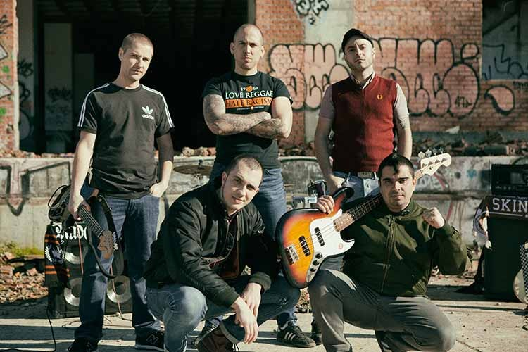
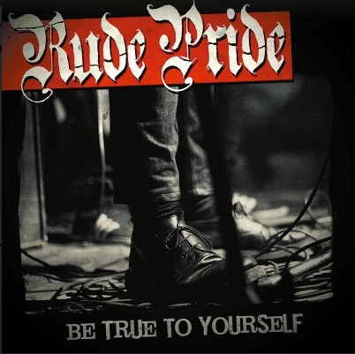
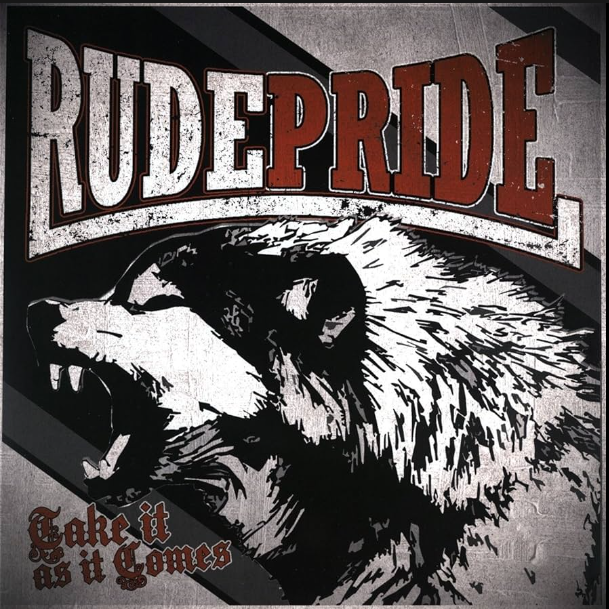

Rude Pride
Rude Pride es una banda de Oi! del sur de Madrid que se formó en el año 2013 por 5 amigos ya conocidos en la competitiva escena de la capital del Estado. Después de grabar dos temas en internet, “Underpaid Scars” y “My Way of Life” y dar varios conciertos por la comunidad, Rude Pride lanzó su primer EP a principios de 2014. Este, fue grabado en los estudios Musigrama y masterizado en EE.UU. En poco menos de tres años habían superado la cifra de 100 conciertos, ya habían visitado 8 países y preparaban una gira por EE.UU.
Discografía
2015 - Be True To Yourself

01- Hated & Rejected
02- Wrong Way
03- Outta My Way
04- Crisis Sons
05- No Problem
06- Golden Fists
07- Screaming Oi!
08- We'll Never Change
09- Flag On Fire
10- Living A Lie
2017 - Take It As It Comes

01- Take It As It Comes
02- Bars & Shackles
03- Keep On Walking
04- Broken Silence
05- Too Fast (Back With A Crash)
06- Once Again
07- Our Pack
08- My Generation
09- Bullying
10- One More Pint
11- Disorder
12- Many People Suffer